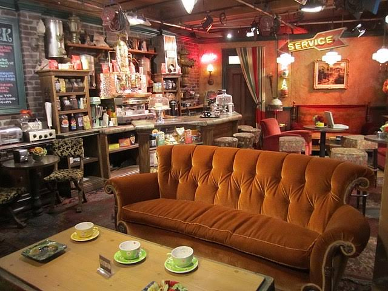

90s Warmth & Community
A relaxed, nostalgic atmosphere built around connection, good music, comfortable seating, and the kind of friendly service that makes you feel like a regular on day one.


Inspired by the warm, unhurried spirit of 90s coffeehouse hangouts like Friends, Central Perk was created to be that unmistakable spot where conversations stretch over a great cup of coffee and good company is always welcome.
Whether you are stopping in for a morning espresso, catching up with friends over a flaky pistachio, chocolate, or caprese croissant, or grabbing a fresh sandwich and juice between plans, our doors are open for everyday moments that feel special.
Thoughtful flavors and a welcoming space for every guest
A relaxed, nostalgic atmosphere built around connection, good music, comfortable seating, and the kind of friendly service that makes you feel like a regular on day one.
From warm muffins and gourmet filled croissants to wholesome sandwiches and cold-pressed juices, everything is prepared with care to pair with your favorite brew.
Nobody should miss out on dessert. We bake classic, vegan, and gluten-free cupcakes so friends with different dietary needs can share the exact same sweet table.
/*Inside of this, you can write a quote*/ "It’s more than just coffee—it’s the place where stories are shared, laughter lingers, and there’s always room for one more friend."— The Central Perk Team /*Identify this as the author of the quote*/
Explore our specialty coffees, cupcakes, croissants, sandwiches, and fresh juices.
Explore the Menu